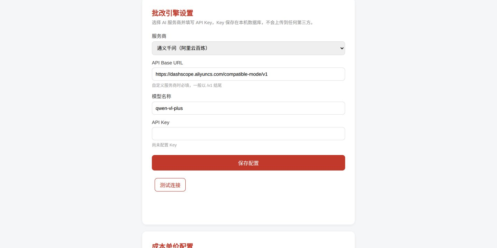
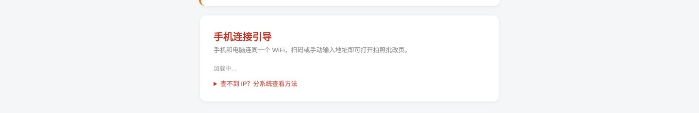

从下载到批改出第一份作业，共 6 步。每一步都有截图对照，跟着做即可。全程约 10 分钟。
打开下载页，点击按钮下载 RedPen.exe，放到一个新建文件夹（例如 D:\红笔）——作业照片和成绩都会存在 exe 旁边的 data 文件夹里，方便整体备份。
双击运行，浏览器会自动打开工作台。
首次登录 PIN 为 123456。登录后请立即到「设置」页改成自己的 6 位数字——这个 PIN 保护的是你电脑上的成绩数据。
在工作台「班级管理」卡片中：点 新建班级（如"三年级2班"）→ 点班级进入 → 添加学生（逐个输入姓名，或从名单批量粘贴）。学生信息只保存在你自己的电脑上。
AI 批改能力来自大模型服务，需要一个 API Key（相当于你的专属密码，按用量付费，批改一份作业约几毛钱）。下面以最常用的 DeepSeek 为例：

▲ 设置页的「批改引擎」表单：选服务商 → 粘贴 Key → 保存 → 测试连接
手机和电脑连接同一个 WiFi。在设置页「手机连接引导」里有一个二维码，用手机相机扫一下，浏览器会自动打开拍照批改页。选班级和学生，对准作业整页拍照即可上传。

▲ 设置页底部的「手机连接引导」二维码
上传后约 20-60 秒出结果：原图上会有红笔圈画（错题）和绿勾（对题），每题附错因分析和置信度。手机上直接看；电脑工作台可看全部班级的学情统计。
对 AI 判定没把握的题（置信度低于 60%）会自动进入复核列表，你点一下"对/错"即可修正——AI 会诚实告诉你它不确定的地方，这是准确性的关键设计。